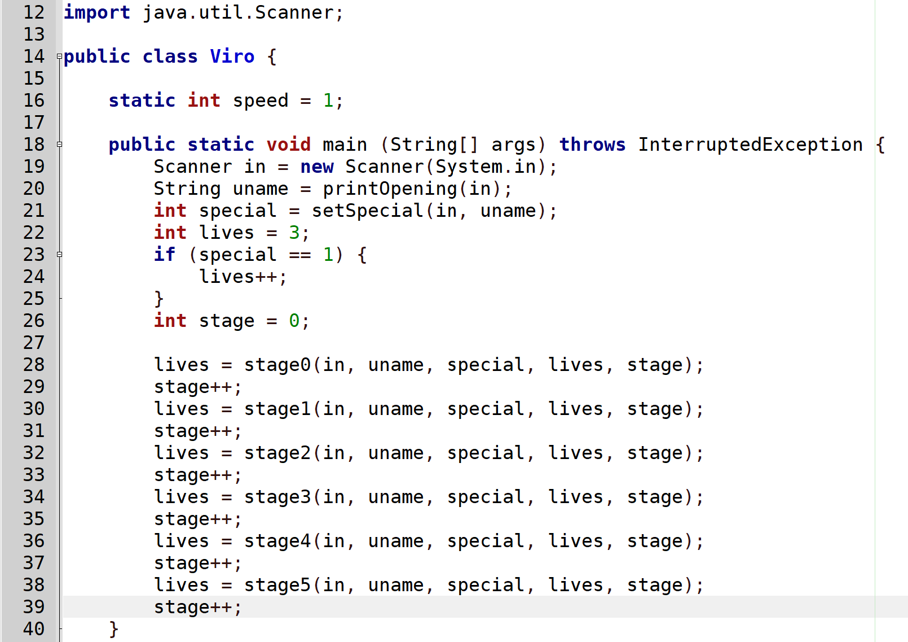

Mr. Gottsacker
Computer Programming
Use the following general format for the main() method. Note how the in object (of the Scanner class) is passed to each stage. This pattern makes it possible to reuse that Scanner without creating one inside each stage method. Also note the use of and placement of the speed variable. This variable is used in my printNarration method to control how fast it prints. Also also note the syntax throws InterruptedException appended to the main method header. This code is needed to force the delay in the printNarration method.

To format narration how my game handles it, you can use the following code. Anywhere else in your program, you can simply call printNarration("A STRING OF TEXT OF ANY LENGTH");, and the program will print the text letter by letter, adding line breaks where appropriate. Every method that calls printNarration() will require the appending of throws InterruptedException to its header.
public static void printNarration(String message) throws InterruptedException {
System.out.print("\t ");
boolean linebreak = false;
for (int i = 0; i < message.length(); i++) {
if (i != 0 && i % 70 == 0) {
linebreak = true;
}
if (linebreak && message.charAt(i) == ' ') {
System.out.print("\n\t");
linebreak = false;
}
System.out.print(message.charAt(i));
if (message.charAt(i) == '.') {
Thread.sleep(700 / speed);
} else {
Thread.sleep(20 / speed);
}
}
System.out.println();
}